เครื่องมือสำหรับทุบและตอก — 39 รายการ
เกรียงโป๊วสีพลาสติก PLASTIC PUTTY KNIFE 3 รายการ
- ผลิตจากวัสดุเพียงชิ้นเดียว มีความยืดหยุ่นสูง ผิวทนทาน
- น้ำหนักเบา และใช้งานทน
| รูป | รหัส | ชื่อสินค้า | ขนาด | จำนวน/ลัง | วัสดุ |
|---|---|---|---|---|---|
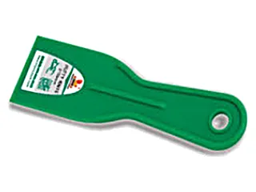 |
W3001A | เกรียงโป๊วสีพลาสติกPLASTIC PUTTY KNIFE ทุกเบอร์ในตระกูลนี้หน้าตาเหมือนกัน ต่างที่ขนาด — ดูขนาดจริงที่คอลัมน์ขนาด |
2"/50mm | 36/432 | |
| W3001B | 4"/100mm | 36/216 | |||
| W3001C | 6"/150mm | 36/216 |
ชุดค้อนเคาะตัวถังรถ 7 ชิ้น 7PCS MIRROR POLISHED CAR REPAIRING TOOLS SET 1 รายการ
- ค้อนเคาะตัวถังด้ามไม้
- -มาตรฐาน
- -ปลายแหลมหัวเห็ด
- -ปลายสี่เหลี่ยมเซาะร่อง
- เหล็กรองเคาะ
- -อเนกประสงค์
- -ทรงนกหวีด
- -ทรงส้นเท้า
- -ทรงนิ้วเท้า
| รูป | รหัส | ชื่อสินค้า | ขนาด | จำนวน/ลัง | วัสดุ |
|---|---|---|---|---|---|
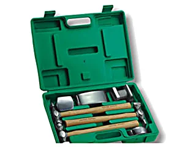 |
W2619 | ชุดค้อนเคาะตัวถังรถ 7 ชิ้น7PCS MIRROR POLISHED CAR REPAIRING TOOLS SET | 4 |
มีดตัดอิฐ BRICK TROWEL(DOUBLE-FACED) 1 รายการ
วัสดุ: SK-55 เหล็กกล้าคาร์บอนสูง
- ตัดอิฐได้ง่าย ทำจากเหล็กกล้าคาร์บอนสูง SK-55 ทนทาน
- ภาพประกอบระบุขนาดใบมีด: กว้าง 62mm, ช่วงใบ 208mm, ยาวรวม 415mm
| รูป | รหัส | ชื่อสินค้า | ขนาด | จำนวน/ลัง | วัสดุ |
|---|---|---|---|---|---|
| W4296 | มีดตัดอิฐBRICK TROWEL(DOUBLE-FACED) | 1/50 | SK-55 |
มีดขูดลอก SCRAPER BLADE 1 รายการ
วัสดุ: เหล็กกล้าคาร์บอนสูง
- มีฝักครอบใบมีด เพื่อความปลอดภัย
- ใบมีดทำจาก เหล็กกล้าคาร์บอนสูง ด้ามจับวัสดุ ABS ใช้ทน
- สามารถใช้ขูด ฟิล์ม สี หรือคราบต่างๆ ที่ผนัง กระจก พื้น กระเบื้อง ฯลฯ
| รูป | รหัส | ชื่อสินค้า | ขนาด | จำนวน/ลัง | วัสดุ |
|---|---|---|---|---|---|
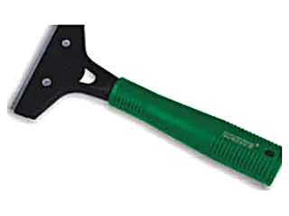 |
W4127 | มีดขูดลอกSCRAPER BLADE | 100mm | 45/360 | เหล็กกล้าคาร์บอนสูง |
เขียดเหล็ก BIRD-PLANER 1 รายการ
- ใบมีดทำจากเหล็กชนิดพิเศษคุณภาพดี
- คมมีดผ่านการอบ-ชุบแบบพิเศษ ความแข็ง HRC60-62
- ใช้สำหรับไสปรับแต่งผิวหน้าไม้ที่มีส่วนเว้า ส่วนโค้งต่างๆ
| รูป | รหัส | ชื่อสินค้า | ขนาด | จำนวน/ลัง | วัสดุ |
|---|---|---|---|---|---|
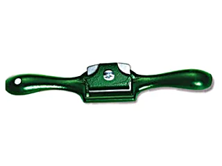 |
W0552 | เขียดเหล็กBIRD-PLANER | 225mm | 12/72 |
เกรียงเหล็กสี่เหลี่ยม PLASTIC HANDLE TROWEL 1 รายการ
วัสดุ: 65# เหล็กกล้าแมงกานีสสูง
- ใบเกรียงทำจากเหล็กแมงกานีส แข็งแรงมาก
- ด้ามจับทำจากวัสดุ PPE แข็งแรงสูง จับได้ถนัด และสบายมือ
- ด้ามจับกับใบเกรียงถูกล็อคขันด้วยน็อตอย่างแน่น ไม่มีหลุด
| รูป | รหัส | ชื่อสินค้า | ขนาด | จำนวน/ลัง | วัสดุ |
|---|---|---|---|---|---|
| W4568A | เกรียงเหล็กสี่เหลี่ยมPLASTIC HANDLE TROWEL | 8.5x7.5x16cm | 150 | 65# |
เกรียงโป๊วสี PUTTY KNIFE WITH PLASTIC HANDLE 5 รายการ
วัสดุ: เหล็กกล้าคาร์บอนสูง
- ด้ามจับ วัสดุ PP เบา และจับได้สบายมือ
- ใบเกรียงทำจากเหล็กกล้าคาร์บอนสูง ผ่านการขัดเงา ผ่านการอบ-ชุบด้วยความร้อน และกรรมวิธีอื่นๆ เพื่อคุณภาพที่ดี
- ด้ามจับกับใบเกรียงถูกทำให้ติดกันอย่างแน่นด้วยรีเวท ไม่หลุดออกจากกัน
| รูป | รหัส | ชื่อสินค้า | ขนาด | จำนวน/ลัง | วัสดุ |
|---|---|---|---|---|---|
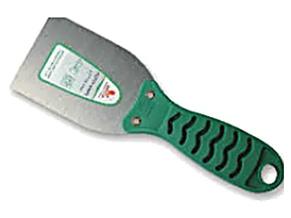 |
W0625B | เกรียงโป๊วสีPUTTY KNIFE WITH PLASTIC HANDLE ทุกเบอร์ในตระกูลนี้หน้าตาเหมือนกัน ต่างที่ขนาด — ดูขนาดจริงที่คอลัมน์ขนาด |
1½"/36.5mm | 12/240 | เหล็กกล้าคาร์บอนสูง |
| W0625C | 2"/50mm | 12/240 | เหล็กกล้าคาร์บอนสูง | ||
| W0625D | 2½"/62.5mm | 12/240 | เหล็กกล้าคาร์บอนสูง | ||
| W0625E | 3"/75mm | 12/240 | เหล็กกล้าคาร์บอนสูง | ||
| W0625F | ลังกว้าง 49cm ต่างจากรุ่นอื่นในกลุ่มที่เป็น 28cm (พิมพ์ไว้เช่นนี้ในตาราง) |
4"/100mm | 12/240 | เหล็กกล้าคาร์บอนสูง |
สิ่วสั้น CHISEL WITH CRYSTAL HANDLE 3 รายการ
วัสดุ: 65# เหล็กกล้าแมงกานีส
- ใบสิ่วหลอมด้วยเหล็กแมงกานีสเบอร์65 อบชุบความร้อน มีความคมมาก
- ใบมีดขัดสีละเอียด ทนทาน คมมีดได้รับการขัดให้คมซ้ำหลายครั้ง
- ที่จับแกนโลหะทั้งหมด หุ้มด้วยวัสดุ ABS โปร่งใส
| รูป | รหัส | ชื่อสินค้า | ขนาด | จำนวน/ลัง | วัสดุ |
|---|---|---|---|---|---|
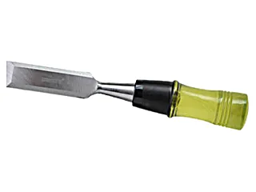 |
W0072C | สิ่วสั้นCHISEL WITH CRYSTAL HANDLE ทุกเบอร์ในตระกูลนี้หน้าตาเหมือนกัน ต่างที่ขนาด — ดูขนาดจริงที่คอลัมน์ขนาด |
½"(13mm) | 12/108 | 65# |
| W0072D | ¾"(19mm) | 12/108 | 65# | ||
| W0072E | 1"(25mm) | 12/108 | 65# |
ค้อนถอนตะปูมินิ ด้ามจับTPR MINI STYLE MIRROR POLISHED CLAW HAMMER WITH TPR/PLASTIC HANDLE 1 รายการ
- ค้อนทำจากเหล็กกล้าคาร์บอนสูงคุณภาพดี ผ่านการชุบแข็ง ผิวกระจก
- ด้ามจับวัสดุ TPR ออกแบบให้ลดการสั่น คงไม่ที่ของแรงขณะทุบ
- มีด้ามถอนตะปู ด้ามจับนุ่มสบาย เพื่อความปลอดภัยในการใช้งาน
| รูป | รหัส | ชื่อสินค้า | ขนาด | จำนวน/ลัง | วัสดุ |
|---|---|---|---|---|---|
| W2611 | ค้อนถอนตะปูมินิ ด้ามจับTPRMINI STYLE MIRROR POLISHED CLAW HAMMER WITH TPR/PLASTIC HANDLE ตารางกลุ่มนี้มีเพียงคอลัมน์ รหัส และ ขนาด ไม่มีคอลัมน์จำนวน/ขนาดลัง/น้ำหนัก; ขนาด '0.25' พิมพ์ไว้โดยไม่ระบุหน่วย |
0.25 |
ค้อนช่างไฟฟ้า ด้ามไม้วอลนัท MACHINIST'S HAMMER WITH WOOD HANDLE 2 รายการ
วัสดุ: SK-55 เหล็กกล้าคาร์บอนสูง
- ด้ามจับทำจากไม้วอลนัทอย่างดี มีความทนทาน
- หัวค้อนทำจากเหล็กกล้าคาร์บอนสูง และผ่านการชุบแข็งเพื่อความทน
| รูป | รหัส | ชื่อสินค้า | ขนาด | จำนวน/ลัง | วัสดุ |
|---|---|---|---|---|---|
| ค้อนไม้ตีกิฟ200กรัม | ค้อนช่างไฟฟ้า ด้ามไม้วอลนัทMACHINIST'S HAMMER WITH WOOD HANDLE ตารางมีเพียงคอลัมน์ รหัส และ ขนาด |
200g | SK-55 | ||
| ค้อนไม้ตีกิฟ300กรัม | ตารางมีเพียงคอลัมน์ รหัส และ ขนาด |
300g | SK-55 |
ค้อนหงอนด้ามไม้ CLAW HAMMER.WITH PRESSED WOOD HANDLE 1 รายการ
วัสดุ: SK-55 เหล็กกล้าคาร์บอนสูง
- ค้อนทำจากเหล็กกล้าคาร์บอนสูงคุณภาพดี ผ่านการชุบแข็ง
- ด้ามจับไม้นำเข้าจากต่างประเทศ คุณภาพดี ใช้ทน หัวค้อนผิวกันลื่น
- ภาพประกอบระบุจุดเด่น: ช่องรับตะปู, พื้นผิวกันลื่น, แม่เหล็ก
| รูป | รหัส | ชื่อสินค้า | ขนาด | จำนวน/ลัง | วัสดุ |
|---|---|---|---|---|---|
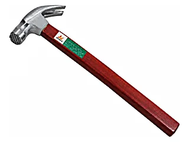 |
W3081A | ค้อนหงอนด้ามไม้CLAW HAMMER.WITH PRESSED WOOD HANDLE ขนาดพิมพ์ว่า '18:OZ' (มีเครื่องหมายทวิภาคคั่น น่าจะหมายถึง 18 OZ) |
18:OZ | 36 | SK-55 |
ค้อนยางด้ามไม้ RUBBER MALLET WITH WOOD HANDLE 2 รายการ
- ค้อนยางพารา เหนียวนุ่ม ใช้เพื่อถนอม และรักษาสภาพผิวของชิ้นงาน
| รูป | รหัส | ชื่อสินค้า | ขนาด | จำนวน/ลัง | วัสดุ |
|---|---|---|---|---|---|
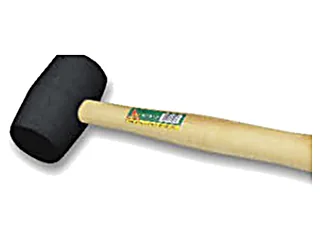 |
W0165A | ค้อนยางด้ามไม้RUBBER MALLET WITH WOOD HANDLE ทุกเบอร์ในตระกูลนี้หน้าตาเหมือนกัน ต่างที่ขนาด — ดูขนาดจริงที่คอลัมน์ขนาด |
300g | 72 | |
| W0165B | 500g | 48 |
ค้อนหัวกลม ด้ามไฟเบอร์ ขนาด 1 ปอนด์ FIBER HANDLE ROUND HEAD HAMMER 1 รายการ
- ค้อนทำจากเหล็กกล้าคาร์บอนสูงคุณภาพดี ผ่านการชุบแข็ง ผิวกระจก
- ด้ามจับวัสดุ TPR ออกแบบให้ลดการสั่น คงไม่ที่ของแรงขณะทุบ
- ด้ามจับนุ่มสบาย เพื่อความปลอดภัยในการใช้งาน
| รูป | รหัส | ชื่อสินค้า | ขนาด | จำนวน/ลัง | วัสดุ |
|---|---|---|---|---|---|
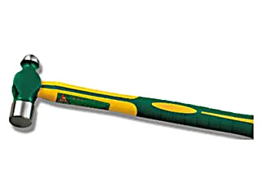 |
W2610B | ค้อนหัวกลม ด้ามไฟเบอร์ ขนาด 1 ปอนด์FIBER HANDLE ROUND HEAD HAMMER | 1LB | 15/36 |
ค้อนปอนด์ด้ามไฟเบอร์ FIBER HANDLE OCTAGONAL HAMMER 1 รายการ
วัสดุ: SK-55 เหล็กกล้าคาร์บอนสูง
- ค้อนทำจากเหล็กกล้าคาร์บอนสูงคุณภาพดี ผ่านการชุบแข็ง ผิวกระจก
- ด้ามจับวัสดุ TPR ออกแบบให้ลดการสั่น คงไม่ที่ของแรงขณะทุบ
- ค้อนปอนด์ หน้าตัดแปดเหลี่ยม ด้ามจับนุ่มสบาย ปลอดภัยในการใช้งาน
| รูป | รหัส | ชื่อสินค้า | ขนาด | จำนวน/ลัง | วัสดุ |
|---|---|---|---|---|---|
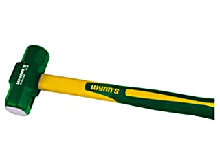 |
W2628C | ค้อนปอนด์ด้ามไฟเบอร์FIBER HANDLE OCTAGONAL HAMMER | 4LB | 12 | SK-55 |
ค้อนยูริเทนไร้แรงสะท้อน DEAD BLOW HAMMER 1 รายการ
- แกนค้อนเป็นเหล็ก เมื่อทุบจะไม่มีแรงเด้งสะท้อน
- ทุบแล้วไม่ทำลายผิวหน้าชิ้นงาน
- ค้อนโพลิเมอร์หุ้มเหล็ก แรงทุบเยอะ
| รูป | รหัส | ชื่อสินค้า | ขนาด | จำนวน/ลัง | วัสดุ |
|---|---|---|---|---|---|
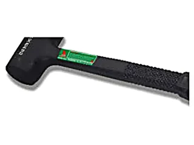 |
W0166C | ค้อนยูริเทนไร้แรงสะท้อนDEAD BLOW HAMMER | 2P | 6/24 |
ค้อนยูริเทนไร้แรงสะท้อน เปลี่ยนหัวได้ INSTALLATION HAMMER 1 รายการ
- ตัวค้อนทำจากเหล็กกล้าคาร์บอนสูง แข็งแรง
- ค้อนยูริเทน โปร่งใส ไม่ทำลายผิวหน้าของชิ้นงานที่ทุบหรือตอก
- เปลี่ยนอะไหล่หัวได้ ลดการเกิดเสียง ทนต่อน้ำมัน ไม่ติดไฟ ด้ามจับกันลื่น
| รูป | รหัส | ชื่อสินค้า | ขนาด | จำนวน/ลัง | วัสดุ |
|---|---|---|---|---|---|
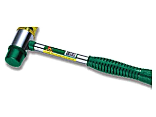 |
W0180A | ค้อนยูริเทนไร้แรงสะท้อน เปลี่ยนหัวได้INSTALLATION HAMMER | 25mm | 12/108 |
อะไหล่หัวค้อนยูริเทน ไร้แรงสะท้อน INSTALLATION HAMMER HEAD 1 รายการ
- อะไหล่หัวค้อนยูริเทน โปร่งใส ไม่ทำลายผิวของชิ้นงานที่ทุบหรือตอก
- ไร้แรงสะท้อน ลดการเกิดเสียง ทนต่อน้ำมัน ไม่ติดไฟ
| รูป | รหัส | ชื่อสินค้า | ขนาด | จำนวน/ลัง | วัสดุ |
|---|---|---|---|---|---|
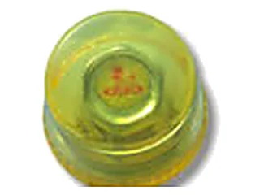 |
W0372A | อะไหล่หัวค้อนยูริเทน ไร้แรงสะท้อนINSTALLATION HAMMER HEAD | 25mm | 200/1000 |
ค้อนหงอนสิงห์ ด้ามไฟเบอร์ CLAW HAMMER 2 รายการ
วัสดุ: SK-55 เหล็กกล้าคาร์บอนสูง
- ค้อนทำจากเหล็กกล้าคาร์บอนสูงคุณภาพดี ผ่านการชุบแข็ง
- ด้ามจับไฟเบอร์ ยางหุ้ม
- ภาพประกอบระบุ: หัวค้อน
| รูป | รหัส | ชื่อสินค้า | ขนาด | จำนวน/ลัง | วัสดุ |
|---|---|---|---|---|---|
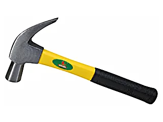 |
ค้อนสิงห์-27 | ค้อนหงอนสิงห์ ด้ามไฟเบอร์CLAW HAMMER ทุกเบอร์ในตระกูลนี้หน้าตาเหมือนกัน ต่างที่ขนาด — ดูขนาดจริงที่คอลัมน์ขนาด ช่อง PCS/MEAS/W เว้นว่าง · หัวตารางเรียงเป็น SIZE ขนาด (สลับที่จากหน้าอื่น) |
หัวค้อนเส้นผ่านศูนย์กลาง 27 มม. | SK-55 | |
| ค้อนสิงห์-29 | ช่อง PCS/MEAS/W เว้นว่าง |
หัวค้อนเส้นผ่านศูนย์กลาง 29 มม. | SK-55 |
ค้อนหงอน ตรา SOHENG CLAW HAMMER 1 รายการ
วัสดุ: SK-55 เหล็กกล้าคาร์บอนสูง
- ค้อนทำจากเหล็กกล้าคาร์บอนสูงคุณภาพดี ผ่านการชุบแข็ง
- ด้ามจับยางหุ้ม รอยจับพอดีมือ
| รูป | รหัส | ชื่อสินค้า | ขนาด | จำนวน/ลัง | วัสดุ |
|---|---|---|---|---|---|
 |
ค้อน SOHENG | ค้อนหงอน ตรา SOHENGCLAW HAMMER ช่อง PCS/MEAS/W เว้นว่าง |
23 OZ | SK-55 |
ค้อน2 ปอนด์ด้ามสั้น 11" FIBER HANDLE OCTAGONAL HAMMER 1 รายการ
วัสดุ: SK-55 เหล็กกล้าคาร์บอนสูง
- ด้ามจับวัสดุ TPR ออกแบบให้ลดการสั่น คงไม่ที่ของแรงขณะทุบ
- ค้อนปอนด์ หน้าตัดแปดเหลี่ยม ด้ามจับนุ่มสบาย ปลอดภัยในการใช้งาน
| รูป | รหัส | ชื่อสินค้า | ขนาด | จำนวน/ลัง | วัสดุ |
|---|---|---|---|---|---|
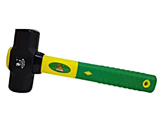 |
ค้อนMTT | ค้อน2 ปอนด์ด้ามสั้น 11"FIBER HANDLE OCTAGONAL HAMMER ช่อง PCS/MEAS/W เว้นว่าง |
2 LB ยาว 11" | SK-55 |
สิ่วตะไบบุ้ง CHISEL 3 รายการ
วัสดุ: 65# เหล็กกล้าแมงกานีส
- ใบสิ่วหลอมด้วยเหล็กแมงกานีสเบอร์65 อบชุบความร้อน มีความคมมาก
- ใช้ได้หลายอย่าง สามารถใช้ผิวตะไขบุ้ง ด้านบนตะไบเหลา-ขัดไม้ได้ (หัวข้อกลุ่มสะกดว่า 'ตะไบบุ้ง' แต่บรรทัดนี้พิมพ์ว่า 'ตะไขบุ้ง')
| รูป | รหัส | ชื่อสินค้า | ขนาด | จำนวน/ลัง | วัสดุ |
|---|---|---|---|---|---|
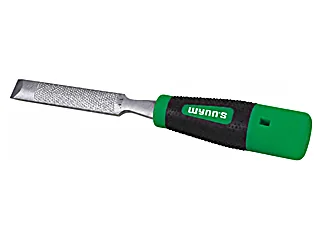 |
W3495A | สิ่วตะไบบุ้งCHISEL ทุกเบอร์ในตระกูลนี้หน้าตาเหมือนกัน ต่างที่ขนาด — ดูขนาดจริงที่คอลัมน์ขนาด |
½"(13mm) | 6/60 | 65# |
| W3495B | ¾"(19mm) | 6/60 | 65# | ||
| W3495C | 1"(25mm) | 6/60 | 65# |
ชุดเหล็กสกัด 12 ชิ้น 12 PCS PIN CHISEL SET 1 รายการ
วัสดุ: CR-V เหล็ก Chromium Vanadium
- ทำจากเหล็ก CR-V
- ใช้งานได้ดี และมีความทนทาน
- เหล็กนำศูนย์ 2X10X140mm
- เหล็กมาร์ค 6X10X100mm, 8X11X115mm
- เหล็กสกัดปากแบน 10X8X140mm, 12X10X150mm, 16X12X170mm
- เหล็กส่งปิ้น 1.5X6X150mm, 3X8X150mm, 4X8X150mm, 5X8X150mm, 6X10X150mm, 8X10X150mm
| รูป | รหัส | ชื่อสินค้า | ขนาด | จำนวน/ลัง | วัสดุ |
|---|---|---|---|---|---|
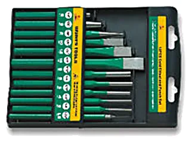 |
W0449 | ชุดเหล็กสกัด 12 ชิ้น12 PCS PIN CHISEL SET | 10/20 | CR-V |
เหล็กส่งปิ้นชุด 6 PCS PIN CHISEL SET 1 รายการ
วัสดุ: CR-V เหล็ก Chromium Vanadium
- ทำจากเหล็ก CR-V
- เหล็กส่งปิ้น หรือเหล็กส่งที่มีหน้าตัดปลายตรงอย่างดี ใช้ทนนาน
- ขนาด 2x6x150มม. 3x8x150มม. 4x8x150มม. 5x8x150มม. 6x10x150มม. 8x10x150มม.
| รูป | รหัส | ชื่อสินค้า | ขนาด | จำนวน/ลัง | วัสดุ |
|---|---|---|---|---|---|
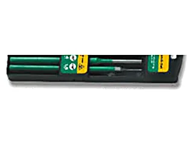 |
W0448 | เหล็กส่งปิ้นชุด6 PCS PIN CHISEL SET | 10/40 | CR-V |
สิ่วยาวด้ามตอก CHISEL WITH CRYSTAL HANDLE 3 รายการ
วัสดุ: 65# เหล็กกล้าแมงกานีส
- แกนเหล็กรองรับการตอก
- ใบสิ่วหลอมด้วยเหล็กแมงกานีสเบอร์65 อบชุบความร้อน มีความคมมาก
- ใบมีดขัดละเอียด ทนทาน คมมีดได้รับการขัดให้คมซ้ำหลายครั้ง
- ที่จับแกนโลหะทั้งหมด หุ้มด้วยวัสดุ ABS โปร่งใส
| รูป | รหัส | ชื่อสินค้า | ขนาด | จำนวน/ลัง | วัสดุ |
|---|---|---|---|---|---|
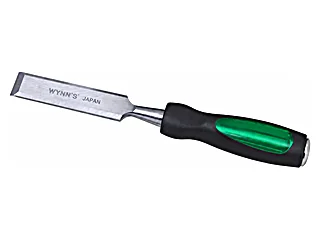 |
W0151B | สิ่วยาวด้ามตอกCHISEL WITH CRYSTAL HANDLE ทุกเบอร์ในตระกูลนี้หน้าตาเหมือนกัน ต่างที่ขนาด — ดูขนาดจริงที่คอลัมน์ขนาด |
½"(13mm) | 8/48 | 65# |
| W0151D | ตารางข้ามรหัส W0151C ไป (มีเฉพาะ B, D, E) |
¾"(19mm) | 8/48 | 65# | |
| W0151E | 1"(25mm) | 8/48 | 65# |
เจอรหัสที่ต้องการแล้ว? กดที่รหัสเพื่อถามราคา
กดที่รหัสสินค้าในตาราง ระบบจะเปิด LINE พร้อมข้อความให้แล้ว หรือทักมาบอกรายการที่ต้องการก็ได้ ทีมงานเช็คสต็อกและแจ้งราคาส่งให้